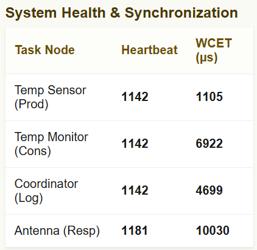

Project Overview
This Capstone Project is a modification of Application 5 of Real-Time Systems. It is designed to simulate an internal temperature sensor's data being processed and sent to ground control from a satellite deisgnated SAT-RKH-1. The sensor's data is represented as a packet of 4 data items: the timestamp in milliseconds, the packet id, the voltage of the circuitry, and the temperature itself in celsius. The sensor task simulates a filtering to acquire this temperature before it This is sent to the temperature monitor through a queue with a depth of 20 total items. This happens roughly every 50ms for a total of slightly less than 20 items sent every second. The temperature monitor simulates decrypting the data with a checksum before takeing the packet and makes sure that it is within an acceptable threshold, flagging the serial monitor if it is not. when both of these tasks are complete, they each raise a bit flag. when both flags are raised, the log cooridnatior task simulates formatting this data into flash before sending it off to the antenna task to simulate an RF FEC interleaving process before sending the data to ground control. There is also a button ISR which will also prompt this antenna task. Both methods will use a direct taks notification to signal the antenna task
The web monitor task is also apart of this Cpastone project. It displays severla key pieces of information. It's first table shows the current states of tghe event group bit field and queue dept as well as the contents the last packet taken into the temeprature monitor task. The second table shows the four main tasks of the project as well as the amount of times they're been called as well as their currently recorded Worst-Case Execution times.
Demonstration Video
A functional demonstration of the dual-core pipeline and web monitor in action.
System Architecture
Below are the high-level application architecture and concurrency models driving the firmware design.
Application Architecture

Concurrency Diagram

Task Table & WCET Evidence
WCET Measurement Evidence
Execution timings isolated from I/O blocking and system ISR preemption.

Hazard Analysis
Final Reflection
[REPLACE THIS TEXT WITH YOUR REFLECTION] Describe what you'd do differently, what was harder than expected, and the most valuable thing learned.
Source Code & Firmware Files
Access the core execution files and full repository documentation below: